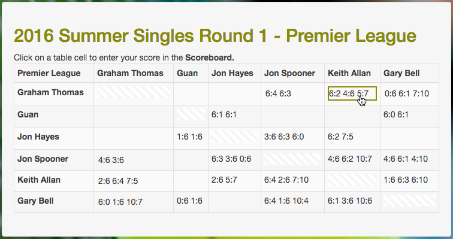
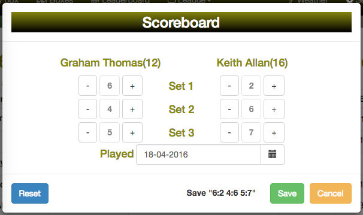

<div class="row">
    <div class="well">
        <h1>Entering Scores</h1>
        <h3>Using the Scoreboard</h3>
        <h4>1) Move the cursor to the correct row/column and click</h4>
        <h5>Example Boxleague with row/column cell highlighted</h5>
        
        <h4>2) Enter scores in the scoreboard and save</h4>
        <h5>Example pop-up Scoreboard</h5>
        
        <p>The full results are entered into the scoreboard as Set1, Set2 and Set3 (if played), with games entered for
            both
            players. Set3 (see <a href="#/rules">Rules</a>) can be entered either as a full set score (e.g. 6:4) or a 10
            point
            match tiebreak. A 10 point tiebreak can either be entered as a short tiebreak score (e.g. 1:0 to indicate
            which
            player
            won) or a full tiebreak score (e.g. 10:8).
        </p>
        <p>Use the '+' and '-' buttons on the scoreboard to increment or decrement the game count for each player in the
            set.
            The number sequence for Set1 is W, C, <strong>0</strong>, 1, up to 7, for Set2 C, <strong>0</strong>, 1, up
            to 7
            and
            Set3 C, <strong>0</strong>, 1, up to 99. To select either C or W use the '-' button.</p>
        <p>C is used to indicate a CONCEDE and W a WALKOVER (see <a href="#/rules">Rules</a>).
        </p>
        <p>A played on date can be entered for the game. Specifying a played on date will allow you to review the
            history of
            your games at a later date. If a played on date is not entered then the game's scheduled date will be used.
        </p>
        <h3>Examples</h3>
        <ul>
            <li>6:4 6:4 (straight sets win)</li>
            <li>6:3 2:6 10:8 (1 set and tiebreak win - full tiebreak score)</li>
            <li>6:3 2:6 1:0 (1 set and tiebreak win - short tiebreak score)</li>
            <li>6:3 2:6 6:4 (2 sets win - 3 full sets played)</li>
        </ul>
        <h4>Exceptional Scores (see <a href="#/rules">Rules</a>)</h4>
        <ul>
            <li>W:0 (walkover - press the Set1 '-' button to select 'W')</li>
            <li>6:4 C:4 (concede - press the '-' button to select 'C')</li>
        </ul>
        <p>The <span style="background:lightgreen"><strong>&nbsp;Save&nbsp;</strong></span> button will only become
            available
            for a valid sets score.</p>
        <h3>Points (calculated automatically)</h3>
        <p>If you win in 2 sets you get 18 points. The loser gets 1 point per game won.</p>
        <p>If you win in 3 sets (full set or 10 point match tiebreak) you get 16 points. The loser gets 8 points for the
            set
            they won and
            1 point for each game in the set that they lost (excluding the 3rd set or the match tiebreak). The loser
            gets no
            points
            for any games won in Set3.</p>
    </div>
</div>